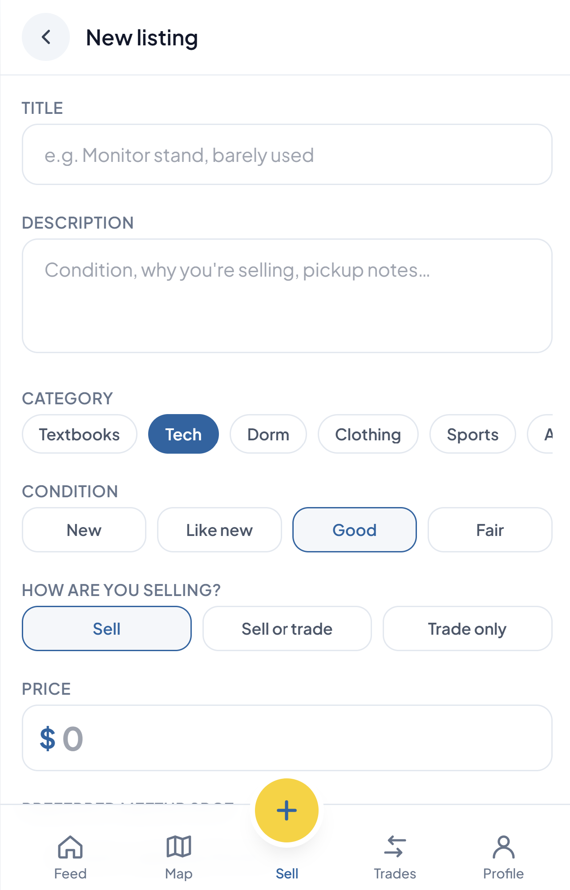
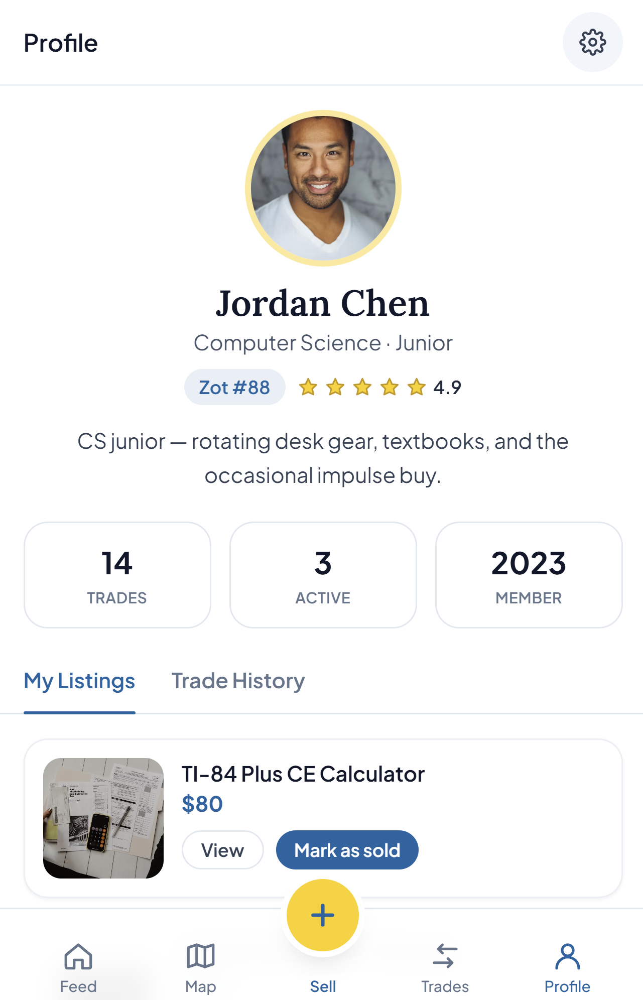
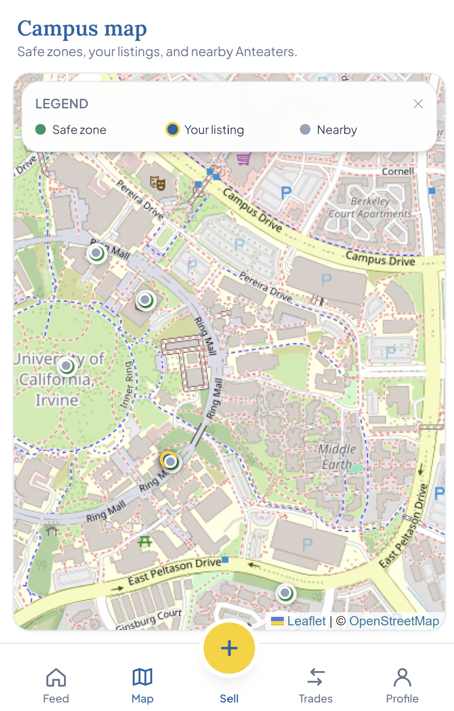

Zot Swap
A campus marketplace designed for UC Irvine students to discover, list, sell, and trade items within their university community.
Overview
Zot Swap creates a campus-focused alternative to general online marketplaces. The product centers the needs of UC Irvine students by organizing listings around common student categories, supporting both sales and trades, and incorporating campus context into discovery and exchange.
The experience is designed to make local exchanges easier to navigate while building trust through user profiles, ratings, trade history, listing management, and clear item-condition details.
What I did
As part of a collaborative development team, I played a significant role in building the responsive marketplace experience. I developed core product flows for the personalized feed, category filtering, search, notifications, and detailed item listings. I also helped implement the listing workflow, which allows users to describe an item, select its category and condition, choose whether to sell or trade, set a price, and add supporting images.
I built key parts of the profile, transaction, and campus-map experiences, including interfaces for user ratings, active listings, trade history, and listing management. I also worked on location-aware features that display safe exchange zones, nearby users, and active listings, helping the team create a marketplace designed around the needs of the UC Irvine community.



